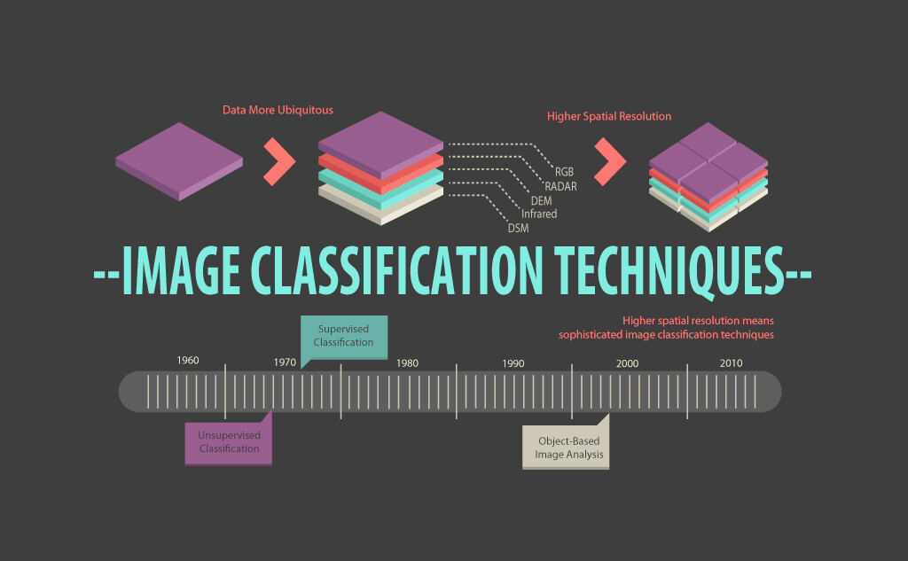
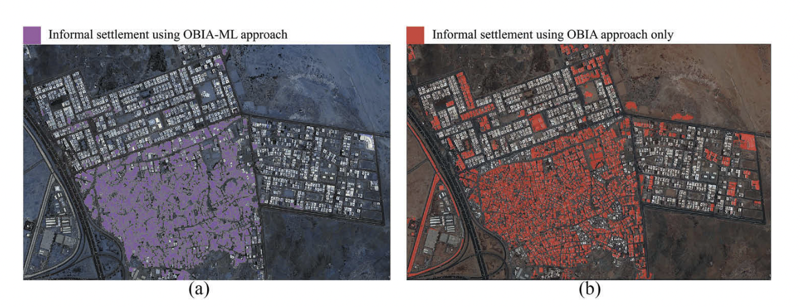
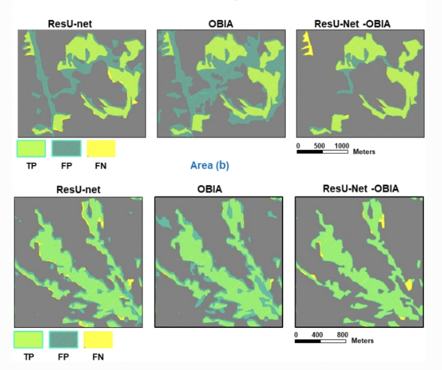

7 Classification II
Land cover classification, Continued
7.1 Summary
Should we bother with creating new ones or use pre-classified data?
GlobeLand30
ESA Climate Change Initiatiec annual global land cover
Dynamic world — near real time classification of sentinel 2 10m
Google building data
MODIS – quite coarse
The answer is, depends.
7.1.1 Object Based Image Analysis, Sub Pixel Analysis, Accuracy Assessment
Here is a flow chart/mind map that describes and explains Object Based Image Analysis, Sub pixel Analysis and briefly touches on Accuracy Assessment.
7.2 Application
Identifying objects and features
OBIA is essentially a step up from last week’s supervised and unsupervised image classification techniques, and is a more contemporary and accurate method in comparison as it uses spectral and contextual information.

Using OBIA to track unplanned urban development such as spread of densely packed informal settlements is extremely effective as it can add more complex classes that are defined by spatial and hierarchical relationships, given a more complex land composition.
(Fallatah2018?) used objected-based random forest classification alongside Machine Learning techniques to identify informal settlements in Jeddah, western Saudi Arabia, using GeoEye-1 Multi Spectral Image with 0.5m panchromatic resolution and 2m multispectral. The paper critiqued OBIA is too time consuming and not viable to for mapping large scale data such as the entire city of Jeddah. The OBIA-ML fusion technique therefore extract the classified and grouped pixels into segments. These segments are then used as training data to for the machine learning model and execute subsequent classification.
Random forest classification was used, where dataset was bootstrapped and 1/3 were left as OOB for validation.
They used very-high-resolution (VHR) imagery and terrain data, and produced 3 land classifications (environment, settlements and object) and 14 indicators (14!!!!!) that provide more details into the building density, road accessibility, where water way be gathering and proximity to social services and hazardous terrains.
This is pretty incredible. To be able to detect so many features in one go goes to show the power of OBIA.

When compared to the OBIA only approach at a 5km^2 scale, the study found the ML approach generated marked improvement in formal settlement (77% to 85%) and road network (73% to 95%) identification. However vegetation accuracy fell from 100% to 60%. But they ultimately found at a city-scale, the ML approach performance improved with overall accuracy of 91% compared to the OBIA only approach at 83%.
This was a very interesting paper to read as it ties a lot of what I’ve learnt in this class and the CASA Data science module together First classifying images and objects through OBIA, then use that classification and apply machine learning techniques.
Accuracy Assessment
A big part of classification is to validation the outcome through accuracy assessment and confusion matrix. In Ghorbanzadeh’s work on landslide detection using OBIA and deep learning techniques, they visualised their accuracy assessment as a map. Through this visualisation you can clearly see model is generating the highest overall accuracy across different terrains.

Interestingly, both Ghorbanzadeh and Fallatah’s work suggest that OBIA accuracy is substantially increased when used in conjuncture with machine learning methods. Ghorbanzadeh went on and highlighted OBIA is highly dependent on expert knowledge in order to get satisfactory results, and deep learning techniques could be a solution to this dependence.
7.3 Reflection
To me, this was probably one of the hardest week in terms of content. It’s difficult to get my head around how we are able to build such powerful machines, especially when it’s just a few lines of code on GEE.
Overall, it is really impressive to be able to gather information on aspects of urban life that would not be otherwise available through census surveys or traditional surveying methods, especially in least developed or developing countries. However my problem with classification is intra-class diversity and variations. On the extreme, a religious building in Rome is going to look very different to one in the Congo. How we do then make sure we have comprehensive and inclusive set of labelled data to hand when we conduct classification? And that the classification is tailored and contextualised to local environments, instead of a researcher based in the US looking to evaluate LULC in Cambodia, without real knowledge of the nuance and context of their built environment? This highlights the need for the expert (rule of thumb person) to be involve throughout the analysis so that no broad assumptions are made. What is really interesting is that (Douglass2020?) highlighted that many researchers now prefer to use automated ML-OBIA methods within the remote sensing archaeology field, exactly because it helps remove human conscious or unconscious biases, where confounding assumptions could be applied. Although automated analysis could still have their limitations and assumptions, these biases are often explicit and reproducible. But again, all machine learning and automated techniques are built from the initial knowledge base/rule of thumb, so I’m still quite skeptical. Is human bias avoidable at all?